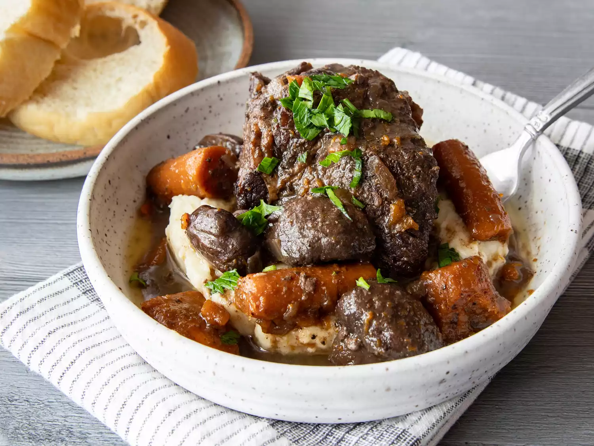

Red Wine Braised Beef

Red wine braised beef is a savory dish where beef is slowly cooked in red wine and broth, resulting in tender, flavorful meat. To make it, start by searing beef chunks in a hot pan until browned. Remove the beef and sauté onions, carrots, and garlic in the same pan. Return the beef to the pan, then pour in red wine and beef broth, and add herbs like thyme and bay leaf. Cover and simmer on low heat for 2-3 hours until the meat is tender and the sauce has thickened. Serve with mashed potatoes or crusty bread to soak up the rich sauce.
Our ingredients
- Beef chuck or brisket (2-3 pounds, cut into chunks)
- Red wine (1 cup)
- Beef broth (2 cups)
- Onions (2 medium, chopped)
- Carrots (2 large, peeled and chopped)
- Garlic (3 cloves, minced)
- Olive oil (2 tablespoons)
- Thyme (1 teaspoon, dried or 2-3 sprigs fresh)
- Bay leaf (1)
- Salt (to taste)
- Pepper (to taste)
Steps to get cooking! (Roast em' up!)
- Preheat your oven to 325°F (163°C).
- Season the beef chunks with salt and pepper.
- Heat olive oil in a large, oven-safe pot or Dutch oven over medium-high heat. Sear the beef chunks on all sides until browned. Remove and set aside.
- In the same pot, add chopped onions, carrots, and minced garlic. Sauté until the vegetables are softened and the onions are translucent, about 5-7 minutes.
- Return the seared beef to the pot with the vegetables. Pour in the red wine and beef broth, making sure the beef is partially submerged.
- Add thyme and bay leaf. Bring the mixture to a simmer.
- Cover the pot with a lid and transfer it to the preheated oven. Braise the beef for 2-3 hours, or until the meat is tender and easily shreds with a fork.
- Remove the pot from the oven and discard the bay leaf. Adjust seasoning with additional salt and pepper if needed.
- Serve the braised beef with the vegetables and sauce, ideally alongside mashed potatoes or crusty bread.